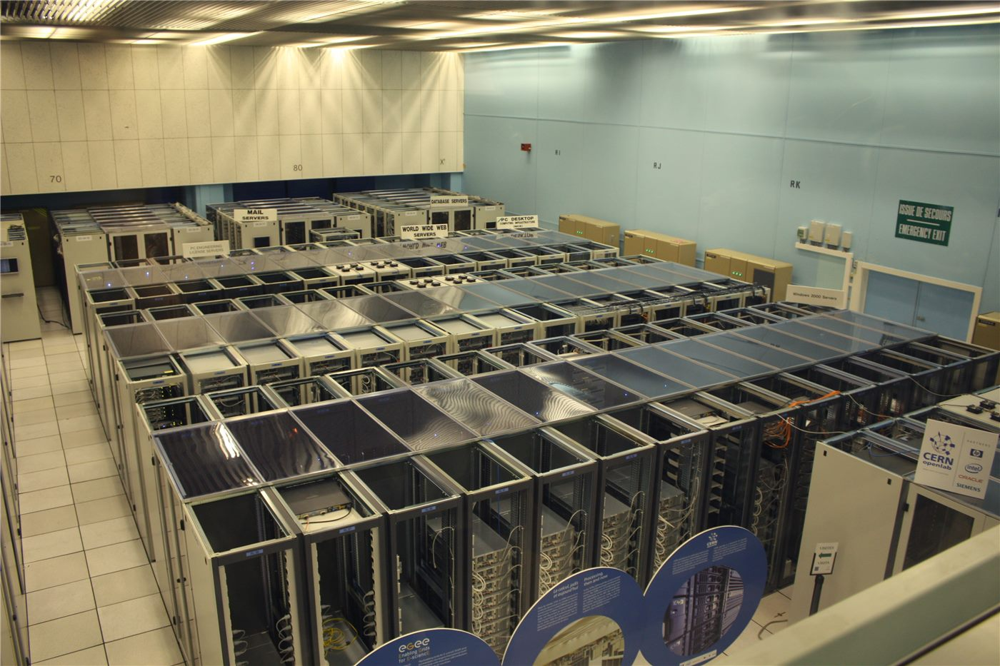

대만 중산과학연구원 해킹 피해… '경외 침입' 통보 지연 논란
대만 국방 연구개발을 담당하는 국가중산과학연구원이 외부로부터 침입을 받은 사실이 드러났다. 침입 자체보다 내부 보고와 대외 통보가 늦었다는 점이 더 큰 논란이 되고 있다.
이문창 기자 · 2026.09.05
橋대만

대만 국가중산과학연구원이 외부 침입을 당한 사실이 4일 보도로 드러났다. 연합보 등은 침입 사실이 확인된 뒤에도 관련 통보가 제때 이뤄지지 않았다는 지적을 함께 전했다.
광고 문의 · 300×250쟁점은 두 갈래다. 하나는 어떤 계통이 뚫렸고 어떤 자료가 접근됐는지다. 다른 하나는 사고 인지 시점과 상급 기관 보고 시점 사이의 간격이다. 후자는 대응 체계 전반의 신뢰와 직결된다.
국방 연구기관에 대한 침입은 단일 사건으로 끝나지 않는 경우가 많다. 초기 침투는 정보 수집에 그치고, 확보한 접근 권한이 나중에 활용되는 방식이 흔하기 때문에 사후 점검 범위가 넓어진다.
대만 당국은 관련 계통 점검과 접근 기록 분석을 진행 중인 것으로 알려졌다. 협력업체를 통한 우회 침투 가능성도 점검 대상에 포함되는 것이 통상적인 절차다.
이 사안은 대만만의 문제가 아니다. 방위산업 공급망은 여러 나라 기업이 얽혀 있어, 한 곳의 취약점이 다른 나라 협력사의 자료로 이어질 수 있다는 점이 반복적으로 지적돼 왔다.
출처·참고 (사실 확인용 — 본문은 직접 재작성)
· https://udn.com/news/index
· https://udn.com/news/index